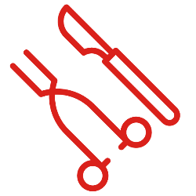

Cursos práticos e online, de curta ou longa duração.
Experiência e didática, juntos!
Uma equipe totalmente dedicada ao compromisso de melhora na qualidade do seu exame de Doppler vascular. A didática e a capacidade de transmitir informação são nossos grandes diferenciais!
O constante aprimoramento teórico e prático é uma necessidade do profissional de medicina moderno. As tecnologias e suas aplicações evoluem e há a necessidade de aprimoramento contínuo!
Nos nossos cursos, além das aulas, você terá acesso a centenas de testes, chats, webinários e grupos exclusivos para troca de conhecimentos e resolução de dúvidas.

A equipe da Fluxo Cursos é integralmente formada por cirurgiões vasculares com título de Área de Atuação em Ecografia Vascular com Doppler e em atividade clínico-cirúrgica-ecográfica.
Nossa plataforma pode ser acessada a partir de qualquer dispositivo, facilitando o seu acesso à carga teórica tanto do curso online como dos cursos presenciais, permitindo o máximo aproveitamento do seu tempo de estudo.
Nosso fundador e instrutor, Dr. Robson Barbosa de Miranda, tem reconhecimento internacional na área de Doppler Vascular, já tendo sido palestrante e recebido alunos de diversos países.